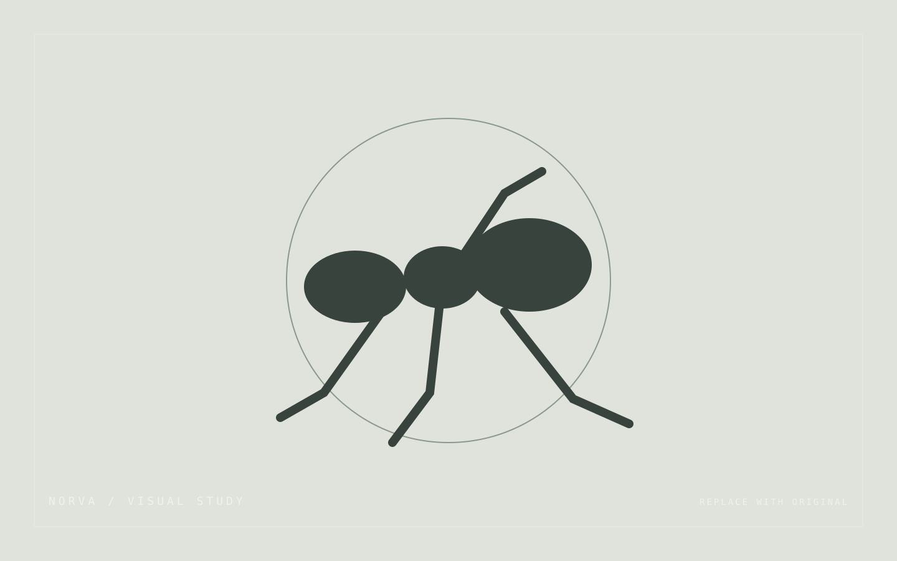

原创计划
让想法生长，
形成自己的内容。
原创 IP 是 NORVA 长期实践的一部分。它们不以短期流量为唯一目标，而从观察、主题与表达方式出发，逐步发展为持续的内容项目。

未来内容方向
从影像到数字表达，
保持开放与实践。
新的原创项目将在主题、素材和制作方式成熟后逐步公开，不提前包装尚未完成的概念。
方向 / 01
短视频与系列 IP
围绕具体主题，建立有辨识度的持续内容表达。
方向 / 02
纪录与影像叙事
以真实人物、地点与经验为基础，发展长期影像项目。
方向 / 03
AI 与数字创作
探索新的创作工具、视觉方法与内容形态。